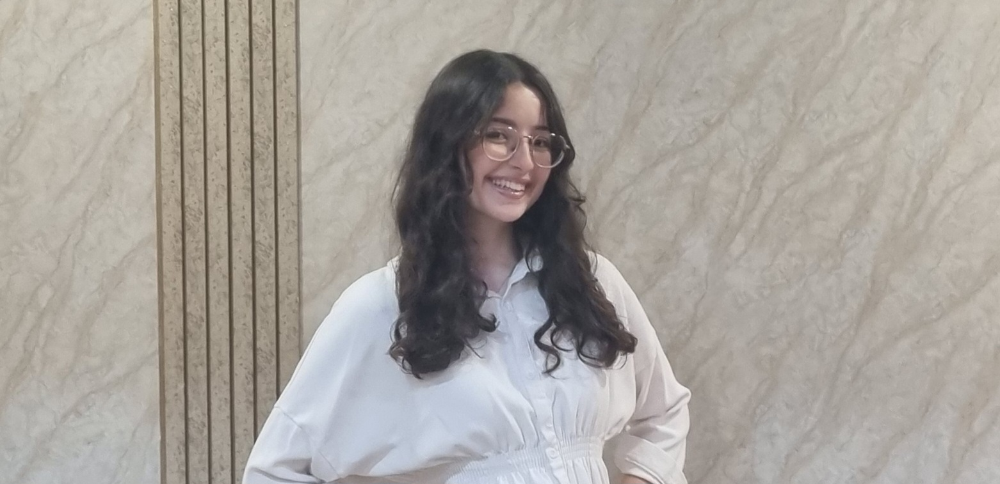

Avital
Sika
Développeuse |
Étudiante en BTS SIO option SLAM, je suis passionnée par le développement web et Java.
Je crée des applications fonctionnelles, sécurisées et au design soigné, pensées et optimisées pour l’utilisateur.
Mon objectif : devenir développeuse Full Stack capable de mener des projets complets de A à Z.

Mon parcours
Mes diplômes et formations
Baccalauréat Général
Formation centrée sur la programmation, l’algorithmique et la logique mathématique, avec des projets pratiques en informatique.
BTS SIO option SLAM
Formation en initial à l’ORT Daniel Mayer de Montreuil, axée sur le développement de solutions logicielles et la création d’applications web et Java.
Expérience pratique sur projets complets : conception, développement, tests et déploiement.